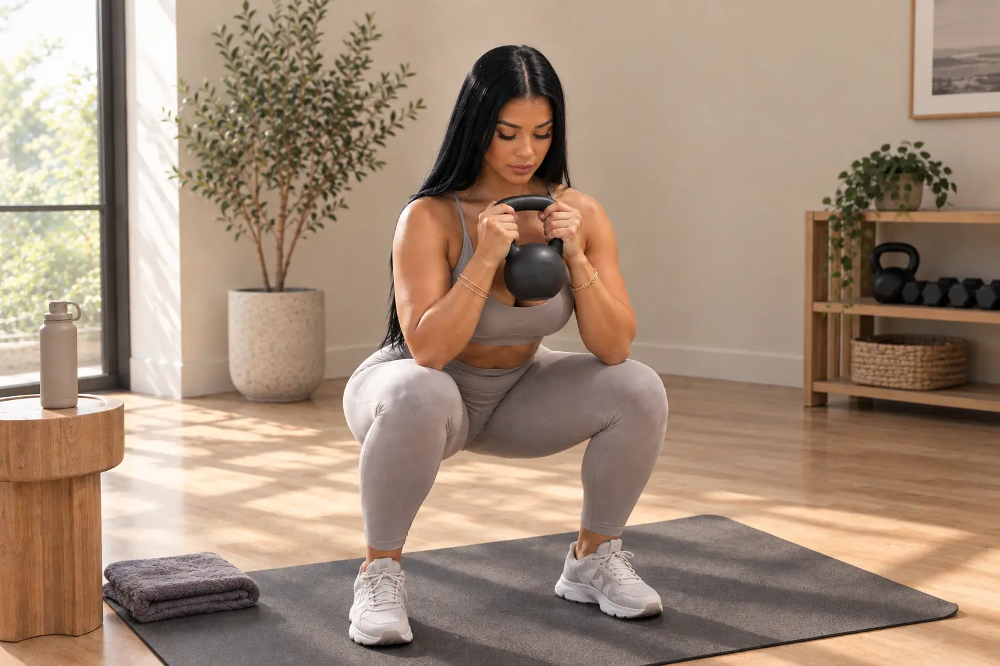
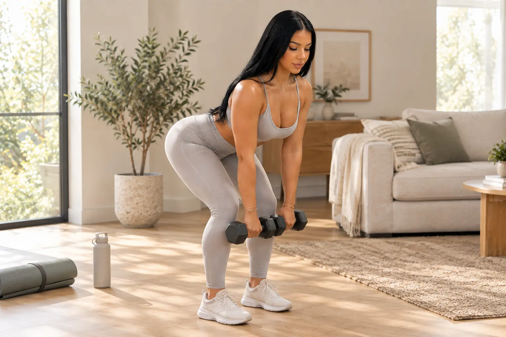

You don't need a fully equipped gym to put together a solid lower body session — a little floor space and a pair of dumbbells go a long way. This list combines movements for your quadriceps, glutes, hamstrings, calves and the smaller stabilizer muscles that help everything else work together. You can follow the five-exercise routine below from start to finish, or pick and choose movements based on your level, your equipment and how much time you have.
What You Need for This At-Home Lower Body Workout
- One pair of dumbbells
- Exercise mat
- Stable chair, bench or low step
- Comfortable shoes
- Clear floor space
This workout leans on dumbbells because several of the core movements — the Goblet Squat, the Dumbbell RDL and the Dumbbell Glute Bridge — are built around them. That said, every exercise on this list includes a bodyweight-friendly alternative, so a missing pair of dumbbells shouldn't keep you from getting started.
If you're still putting your space together, this guide to home workout essentials for women walks through which pieces are worth buying first.
How to Use These Exercises
A few ground rules before you dive in:
- You don't need to do all ten exercises in one session.
- If you're just getting started, begin with the five-move routine at the end of this guide.
- Use a weight that lets you stay in control through the whole set.
- Reduce the load, range of motion or number of reps if your form starts to break down.
- Rest as long as you need between sets.
- Stop if you feel sharp pain, dizziness or anything that feels off.
- If you're managing an injury, a chronic condition, or you're returning to exercise after a long break, check in with a qualified professional before starting.
As a general point of reference, the CDC recommends muscle-strengthening activity on two or more days a week, covering the body's major muscle groups. That's a broad guideline for overall activity — not a required frequency for this specific routine, so use it as context rather than a rule to follow exactly.
10 Lower Body Exercises to Try at Home

1. Goblet Squat
Targets: quadriceps, glutes and core
Suggested range: 8–12 reps
Hold a dumbbell vertically at your chest. Keep your feet in a comfortable stance, send your hips down and slightly back, and let your knees follow the direction of your toes.
Form cue: Keep the dumbbell close to your chest and move through a range that feels comfortable.
Make it easier: Do a bodyweight squat toward a chair.
Make it harder: Gradually add weight or slow down the descent.
2. Reverse Lunge
Targets: quadriceps, glutes and single-leg stability
Suggested range: 6–10 reps per side
Step backward, land on the ball of your back foot, and bend both knees within a range you can control. Push through your front foot to return to standing.
Form cue: Keep the front foot planted and use a step length that feels stable.
Make it easier: Hold onto a wall or chair and do the movement without weight.
Make it harder: Add dumbbells or gradually increase your range of motion.

3. Dumbbell Romanian Deadlift (RDL)
Targets: hamstrings, glutes and posterior chain
Suggested range: 8–12 reps
Hold the dumbbells in front of your thighs, keep a slight bend in your knees, and hinge your hips back. The dumbbells stay close to your legs throughout. Return to standing by squeezing your glutes, without overarching your lower back.
Form cue: Think about moving your hips backward, rather than lowering the weights toward the floor.
Make it easier: Practice the hip hinge with no weight, or reduce the range of motion.
Make it harder: Increase the load gradually while keeping the same control.
4. Dumbbell Glute Bridge
Targets: glutes and hamstrings
Suggested range: 10–15 reps
Lie on your mat with your knees bent and feet flat on the floor. Rest a dumbbell across your hips, holding it securely in place with both hands throughout the movement, and lift your hips with control.
Form cue: Lift through your hips without forcing your lower back into an exaggerated arch.
Make it easier: Remove the dumbbell and do a bodyweight glute bridge.
Make it harder: Add a short pause at the top before increasing the load.
5. Sumo Squat
Targets: glutes, quadriceps and inner thighs
Suggested range: 8–12 reps
Take a wider stance than the Goblet Squat, with your toes turned slightly outward. Hold the dumbbell in front of your body, lower into a comfortable range, and keep your knees tracking in the same direction as your toes.
Form cue: Choose a stance that lets your knees and toes move in the same direction.
Make it easier: Do the movement without a dumbbell, or reduce the depth.
Make it harder: Add weight or slow down the descent.
6. Lateral Lunge
Targets: glutes, quadriceps, adductors and lateral stability
Suggested range: 6–10 reps per side
Step out to the side, sit your hips back over the bending leg, and keep the other leg more extended. Push off the floor to return to center.
Make it easier: Use a smaller step and do the movement without weight.
Make it harder: Hold a dumbbell at your chest.
7. Step-Up
Targets: quadriceps, glutes and single-leg control
Suggested range: 8–10 reps per side
Place your entire foot on a step platform, exercise bench or the bottom step of a sturdy staircase. Step up with control, avoiding excess momentum from the leg still on the ground.
Make it easier: Use a lower surface and a side support for balance.
Make it harder: Add dumbbells.
Safety note: Choose a surface that's stable, non-slip and specifically appropriate for exercise. An ordinary chair or piece of household furniture isn't automatically a suitable platform — look for a proper step, bench or staircase instead.
8. Bulgarian Split Squat
Targets: quadriceps, glutes and single-leg stability
Suggested range: 6–10 reps per side
Rest your back foot on a stable exercise bench or step platform, and adjust your front foot until you find a balanced position. Lower straight down within a controlled range.
Make it easier: Switch to a stationary split squat, keeping both feet on the floor.
Make it harder: Add dumbbells only once you've established balance and control.
Safety note: As with the Step-Up, the elevated surface needs to be stable, non-slip and built to support your body weight during movement — not just any chair you have on hand.
9. Side-Lying Leg Raise
Targets: outer glutes and hip stabilizers
Suggested range: 10–15 reps per side
Lie on your side with your body aligned, and lift your top leg with control, without letting your hip rotate backward.
Make it easier: Reduce the range of motion.
Make it harder: Add a mini resistance band or a pause at the top.
This movement works through hip abduction — moving the leg out and away from the body's midline — helping complement the other glute-focused exercises in this list.
10. Standing Calf Raise
Targets: calves and ankle control
Suggested range: 12–15 reps
Keep the balls of your feet in contact with the floor throughout, raise your heels with control, pause briefly at the top, and lower without letting your body drop.
Make it easier: Hold onto a wall or chair.
Make it harder: Add dumbbells or work one leg at a time.
Try the Five-Exercise Lower Body Routine
If you'd rather not pick and choose, this simple routine covers the essentials in one session. As a starting point, spend two to three minutes warming up first — easy marching in place or a few slow bodyweight squats can help get your joints and muscles ready.
| Order | Exercise | Sets | Reps |
|---|---|---|---|
| 1 | Goblet Squat | 2–3 | 8–12 |
| 2 | Reverse Lunge | 2–3 | 6–10 per side |
| 3 | Dumbbell Romanian Deadlift | 2–3 | 8–12 |
| 4 | Dumbbell Glute Bridge | 2–3 | 10–15 |
| 5 | Sumo Squat | 2–3 | 8–12 |
Suggested rest: About 60–90 seconds between sets — take more if you need it.
For your first session:
- Start with two sets of each movement.
- Use a light-to-moderate load.
- Do the Reverse Lunge without weight, or with support, if needed.
- Prioritize control before adding load or reps.
To progress:
- Reach the top of the suggested rep range with good form.
- Increase the load slightly.
- Drop back to the bottom of the rep range.
- Repeat the process gradually over time.
Updated resistance training guidance from the American College of Sports Medicine points out that consistency, effort and regularly training your major muscle groups matter more, for most adults, than building an overly complex program. It also recognizes free weights, resistance bands and body weight as valid forms of resistance — so there's no need to feel like dumbbells are the only "real" option.
A note on the Goblet Squat and Sumo Squat: they're both included here as two squat variations with different stances and hand positions, not as two unrelated exercises for isolated muscle groups. If you'd like more variety in a future session, you can swap the Sumo Squat for a Lateral Lunge, Step-Up or Calf Raise.
How to Make the Workout Easier
- Do two sets instead of three.
- Stick to bodyweight only.
- Reduce your range of motion.
- Use a chair or wall for support.
- Swap the Bulgarian Split Squat for a Stationary Split Squat.
- Use a lower surface for the Step-Up.
- Extend your rest between sets.
- Choose five exercises instead of trying to fit in all ten.
How to Make It More Challenging
- Increase the load in small increments.
- Slow down the lowering phase of each movement.
- Add a brief pause at the point of greatest tension.
- Gradually increase reps within the suggested range.
- Add an extra set only once your current sets feel controlled.
- Try an appropriate single-leg variation.
- Rotate in some of the complementary exercises in future sessions.
It's best to change one variable at a time — trying to increase load, volume, range of motion and difficulty all at once tends to make it harder to tell what's actually working.
Common Mistakes to Avoid
- Reaching for heavy dumbbells before you've got the movement under control.
- Rushing through reps just to finish the set.
- Treating maximum range of motion as the main goal.
- Letting your knees drift out of alignment with your feet.
- Rounding or overarching your lower back.
- Using unstable furniture for the Step-Up or Bulgarian Split Squat.
- Doing all ten exercises simply because they're on the list.
- Ignoring persistent pain or unusual discomfort.
- Comparing the weight you're using to what anyone else is lifting.
A Realistic Way to Add Lower Body Training to Your Routine
A workout doesn't need to be complicated to be useful. You can start with just the five core exercises above, and use the rest of this list to mix things up in future sessions. Progress gradually, rather than trying to do everything at once — and keep in mind that lower body training is just one piece of a broader, balanced routine.
If you're working on making movement a more regular part of your week, this guide can help you build a healthy daily routine that fits real life.
Ready to make movement part of a more realistic routine? Use the Healthy Habits Checklist to decide where it fits alongside the rest of your week.
If you want a simple system for planning, tracking and adjusting your habits, explore the 30-Day Healthy Lifestyle Reset.
FAQ
Can I do lower body exercises at home with only dumbbells?
Yes. A pair of dumbbells can be used for squats, lunges, Romanian deadlifts and glute bridges. Several exercises in this guide can also be performed with body weight.
How many lower body exercises should I do in one workout?
You do not need to perform all ten exercises at once. The five-move routine in this guide is a practical starting point, and exercises can be rotated in future sessions.
Are these exercises suitable for beginners?
Most include beginner-friendly adaptations, such as removing the weight, reducing the range of motion or using support. Individual needs vary, especially when pain, injury or a medical condition is involved.
What is the difference between a Goblet Squat and a Sumo Squat?
A Goblet Squat describes how the weight is held near the chest. A Sumo Squat uses a wider stance with the feet turned outward. The two can overlap, but the stance and emphasis are different.
How can I make a lower body workout harder at home?
Increase resistance gradually, add repetitions within the suggested range, slow the lowering phase or use a more challenging variation. Change one variable at a time so technique remains consistent.